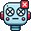
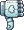

Agent Task Specification
Enter a task specification for the SeeAct agent
Start Agent

Terminate Task
Actions History
No status update available at the moment.
Pending Action
Monitor Mode
Feedback to Agent
Approve

Reject
Options
Download misc logs